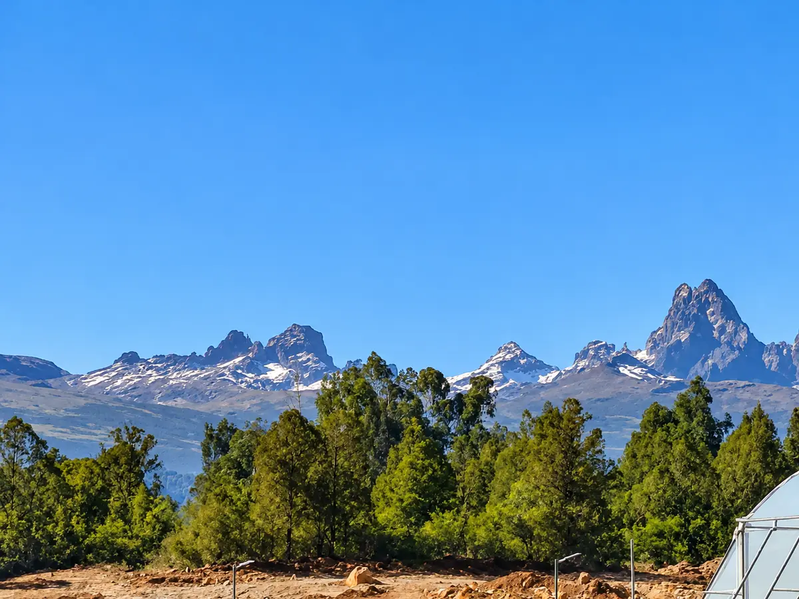
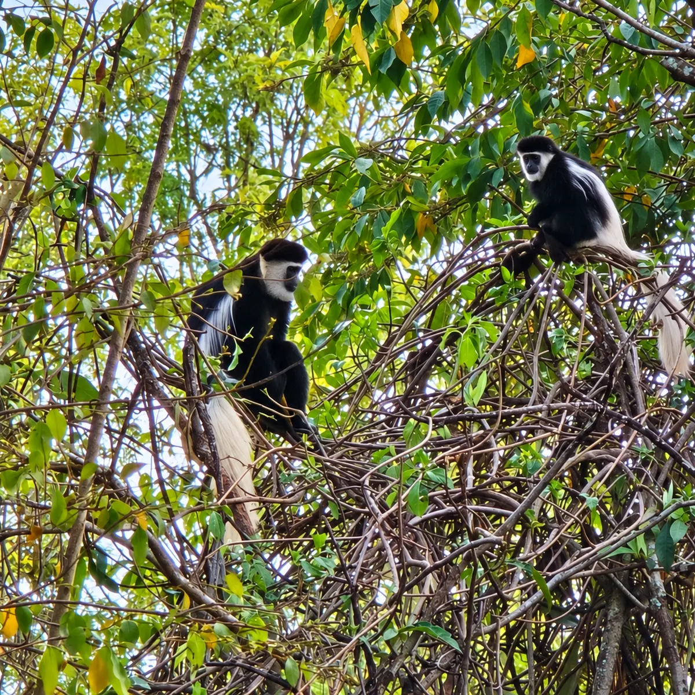

IFTF 2026, Expo Greater Amsterdam
Altura Blooms is listed by the organiser as an exhibitor at stand D2.02. A brand launch is planned at the stand on 4 November.
Scheduled

“We should not decide what the market wants from Timau. We should listen first,”
Altura’s assortment is being built with importers, wholesalers and bouquet makers.
The Flowers
On the slopes of Mount Kenya, in Kenya’s Meru region.
Altura describes a high-altitude site of cool nights and strong light.
The FarmAltura Blooms is being developed in Timau by founders Juliet Njogu, Francis Njogu and Edward Agg-Manning, as a Kenyan-owned and operated company.
Our Story“People, Perpetuity, Planet remain our core driving principles,”



A planned journey from growing to dispatch. Facilities are in development.
With importers, wholesalers and bouquet makers.
Buyer informationAltura Blooms is listed by the organiser as an exhibitor at stand D2.02. A brand launch is planned at the stand on 4 November.
Scheduled
Altura Blooms
A Higher Sense of Beauty.
Timau · Kenya